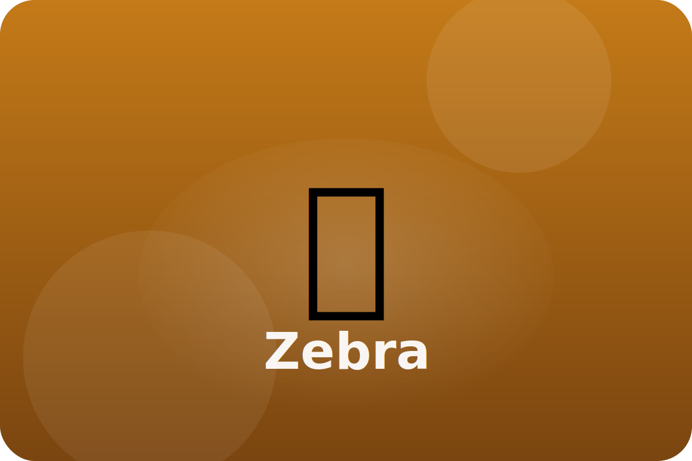

Savannah
Safety in numbers
Zebras travel in herds that mix with wildebeest and gazelles. Their stripes confuse predators that try to pick one zebra to chase.
Dazzle Stripes
When zebras stand together, their stripes blend, making it hard for predators to focus on just one.
Strong Kick
Powerful back legs deliver kicks that can scare off lions or hyenas.
Travel Buddies
Zebras remember paths to water and team up with other animals to keep watch for danger.
Keep exploring the Zebra
Watch the Zebra in action
Zebra Facts for Kids